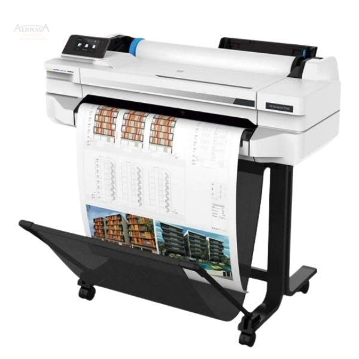

As plotters são dispositivos de saída gráfica que desempenham um papel fundamental na materialização de projetos e desenhos técnicos. Elas são conhecidas por sua precisão e versatilidade, permitindo a criação de gráficos detalhados e desenhos em diversos tipos de mídia, incluindo papel, tecido, vinil e muito mais.
